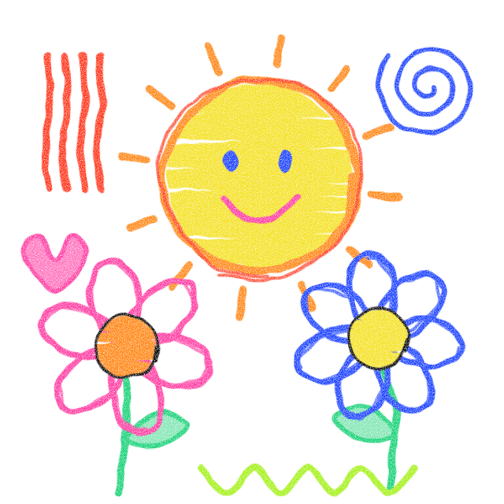

(01)
Formazione e orientamento
Corsi di formazione professionale, orientamento universitario e post-universitario, percorsi su soft skills e supporto all’auto-imprenditorialità.
Ente del Terzo Settore · Napoli
PHOS – dal greco “luce” – è un’associazione senza scopo di lucro che mette insieme formazione, orientamento, cultura e inclusione sociale per contrastare povertà educativa ed esclusione.

Chi siamo
PHOS E.T.S. è stata costituita a Napoli il 21 novembre 2024 per perseguire finalità civiche, solidaristiche e di utilità sociale, nel rispetto dei principi di democrazia, uguaglianza e non discriminazione.
Nasce dall’iniziativa di professionisti con esperienza pluriennale in formazione, orientamento, selezione e amministrazione del personale, progettazione e gestione di interventi finanziati con fondi pubblici e privati.
Promuoviamo la tutela della persona, il benessere individuale e collettivo e l’inclusione sociale, con particolare attenzione a chi è a rischio di esclusione e di povertà educativa. Lavoriamo in rete con enti pubblici, scuole, università ed enti del Terzo Settore.
Cosa facciamo
Corsi di formazione professionale, orientamento universitario e post-universitario, percorsi su soft skills e supporto all’auto-imprenditorialità.
Servizi alla persona, supporto materiale e socio-economico, ascolto e sostegno psicologico, inserimento e reinserimento lavorativo.
Doposcuola per minori a rischio dispersione, laboratori nelle scuole contro bullismo e povertà educativa, educazione emotiva e alle pari opportunità.
Eventi, festival, spettacoli, prodotti multimediali, podcast e vlog; valorizzazione di luoghi, tradizioni e culture dei territori.
Giornate per la legalità e il senso civico, memoria delle vittime innocenti delle mafie, promozione dei diritti umani e delle pari opportunità.
Ripiantumazione di aree verdi, sensibilizzazione ambientale, contrasto al consumo di suolo, re-cycling e upcycling, recupero di spazi abbandonati.
Supporto materiale, mediazione linguistica e percorsi di inserimento sociale e lavorativo per le persone migranti.
Co-housing per studenti, giovani al primo impiego e familiari di ricoverati; pranzi e cene sociali, raccolte alimentari e beneficenza.
Networking con soggetti pubblici e privati, costruzione di partenariati e progetti condivisi con altri enti del territorio.
Progetti
Uno spazio stabile a Napoli Est dedicato al protagonismo giovanile (14–35 anni): sport, laboratori creativi e accompagnamento all’imprenditorialità. Capofila: Figli in Famiglia APS.
Peer education, cortometraggio, teatro itinerante e un’app per segnalare le criticità stradali in Campania. Proponente: Fondazione Domenico Cirillo ETS.
Rassegna cinematografica gratuita all’aperto con incontri con gli autori, nell’ambito dell’avviso “Cultura Napoli 2026”. Capofila: Figli in Famiglia APS.
La nostra rete
Crediamo nella co-progettazione: ogni iniziativa nasce dall’incontro di competenze complementari.
Presidio educativo e sociale di San Giovanni a Teduccio (Napoli Est). Collaborazione stabile per l’accompagnamento di persone in condizione di fragilità; capofila in H.U.B. e Fuori Campo.
Impegnata nella sicurezza stradale e nella cultura della responsabilità. Partner in Strade Sicure e in Fuori Campo.
Società sportiva partner nella direttrice sportiva del progetto H.U.B.
Chi guida l’associazione
Contatti
Sei un ente, una scuola, un’azienda o un professionista e vuoi collaborare? Scrivici.
Sede legale
Corso Umberto I n. 7, Napoli
Email
phos-ets@libero.it
Referente
Roberto Capasso, legale rappresentante